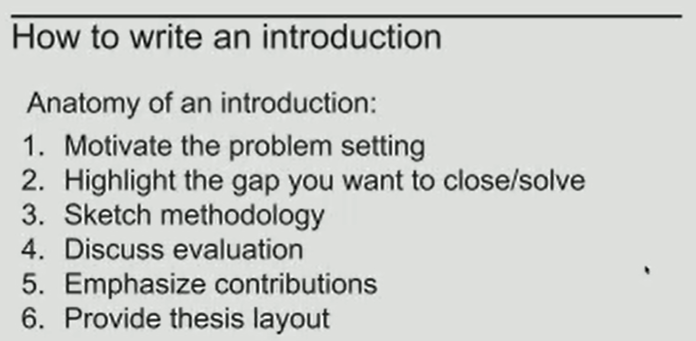

week 1

7.20
QWen2.5-0.5B-Instruct + alpaca_en_52k
1. 10k data (20% full)
eval = alpaca_en_demo
{
"predict_bleu-4": 23.891149900000002,
"predict_model_preparation_time": 0.0037,
"predict_rouge-1": 37.337299200000004,
"predict_rouge-2": 18.148044000000002,
"predict_rouge-l": 28.952862199999995,
"predict_runtime": 519.567,
"predict_samples_per_second": 1.925,
"predict_steps_per_second": 0.241
}
2. 1k data (random_selection)
eval = alpaca_en_demo
{
"predict_bleu-4": 21.819385699999998,
"predict_model_preparation_time": 0.0042,
"predict_rouge-1": 36.5485163,
"predict_rouge-2": 17.3541898,
"predict_rouge-l": 28.3530851,
"predict_runtime": 476.8131,
"predict_samples_per_second": 2.097,
"predict_steps_per_second": 0.262
}
eval = mmlu
Average: 44.45
STEM: 37.94
Social Sciences: 51.45
Humanities: 40.21
Other: 50.03
3. 1k data (TokenOD)
eval = alpaca_en_demo
{
"predict_bleu-4": 24.389109300000005,
"predict_model_preparation_time": 0.0034,
"predict_rouge-1": 38.2405828,
"predict_rouge-2": 18.5389167,
"predict_rouge-l": 29.640779199999997,
"predict_runtime": 536.2525,
"predict_samples_per_second": 1.865,
"predict_steps_per_second": 0.233
}
eval = mmlu
Average: 45.58
STEM: 39.46
Social Sciences: 52.10
Humanities: 41.62
Other: 50.83
4. 1k data (cluster)
eval = alpaca_en_demo
{
"predict_bleu-4": 20.827346300000002,
"predict_model_preparation_time": 0.0035,
"predict_rouge-1": 36.4046164,
"predict_rouge-2": 17.511612500000002,
"predict_rouge-l": 28.099636299999997,
"predict_runtime": 446.0694,
"predict_samples_per_second": 2.242,
"predict_steps_per_second": 0.28
}
5. 1k data (cluster_kmeans++)
eval = alpaca_en_demo
{
"predict_bleu-4": 20.9177064,
"predict_model_preparation_time": 0.0036,
"predict_rouge-1": 35.692976,
"predict_rouge-2": 17.133288999999998,
"predict_rouge-l": 27.468379000000002,
"predict_runtime": 523.0056,
"predict_samples_per_second": 1.912,
"predict_steps_per_second": 0.239
}
eval = mmlu
- 160 center
Average: 45.90 STEM: 40.76 Social Sciences: 52.10 Humanities: 41.68 Other: 50.93 - no center
Average: 43.00
STEM: 36.68
Social Sciences: 49.69
Humanities: 38.96
Other: 48.40
-
100 center
Average: 44.42 STEM: 37.54 Social Sciences: 51.09 Humanities: 40.60 Other: 50.06 -
160 center (bad)
Average: 44.26
STEM: 38.60
Social Sciences: 50.93
Humanities: 40.38
Other: 48.83
\(\nabla^2 \mathcal{L}_{\mathcal{S}}(\Theta) = \frac{1}{n} \sum_{i \in \mathcal{S}} \sum_{j=1}^{M_i} \left( \text{diag}(p(y_{i,j} | \mathbf{x}_{i,j}; \Theta)) - p(y_{i,j} | \mathbf{x}_{i,j}; \Theta) p(y_{i,j} | \mathbf{x}_{i,j}; \Theta)^\top \right) \otimes \mathbf{x}_{i,j} \mathbf{x}_{i,j}^\top\)
- 200 center
Average: 45.00
STEM: 38.60
Social Sciences: 51.93
Humanities: 41.25
Other: 49.81
Average: 44.77
STEM: 38.60
Social Sciences: 52.10
Humanities: 40.09
Other: 50.34
Average: 44.68
STEM: 38.63
Social Sciences: 51.45
Humanities: 41.15
Other: 49.01
6. 1k data (CaR)
eval = alpaca_en_demo
{
"predict_bleu-4": 28.8181227,
"predict_model_preparation_time": 0.0038,
"predict_rouge-1": 39.3859378,
"predict_rouge-2": 19.0912641,
"predict_rouge-l": 29.986811799999998,
"predict_runtime": 838.0505,
"predict_samples_per_second": 1.193,
"predict_steps_per_second": 0.149
}
7. 1k data (SCAR)
eval = alpaca_en_demo
{
"predict_bleu-4": 28.907599599999998,
"predict_model_preparation_time": 0.0039,
"predict_rouge-1": 40.858637300000005,
"predict_rouge-2": 20.002359799999997,
"predict_rouge-l": 31.2367843,
"predict_runtime": 415.1387,
"predict_samples_per_second": 2.409,
"predict_steps_per_second": 0.152
}
8. 1k data (CaR + SCAR)
eval = alpaca_en_demo
{
"predict_bleu-4": 29.111272999999997,
"predict_model_preparation_time": 0.0036,
"predict_rouge-1": 41.27674,
"predict_rouge-2": 20.529445399999997,
"predict_rouge-l": 31.8013081,
"predict_runtime": 509.6623,
"predict_samples_per_second": 1.962,
"predict_steps_per_second": 0.165
}
eval = mmlu
Average: 44.64
STEM: 38.90
Social Sciences: 51.71
Humanities: 40.00
Other: 50.00
9. 1k data (RDS+)
eval = alpaca_en_demo
{
"predict_bleu-4": 23.039771999999996,
"predict_model_preparation_time": 0.0065,
"predict_rouge-1": 37.601626100000004,
"predict_rouge-2": 17.7743515,
"predict_rouge-l": 29.2630153,
"predict_runtime": 500.4103,
"predict_samples_per_second": 1.998,
"predict_steps_per_second": 0.25
}
eval = mmlu
Average: 45.44
STEM: 38.54
Social Sciences: 52.13
Humanities: 41.87
Other: 50.71
10. 1k data (RPVopt)
eval = mmlu
Average: 45.56
STEM: 40.13
Social Sciences: 52.71
Humanities: 40.72
Other: 50.86
10. 1k data (Aopt, actual 672)
eval = mmlu
actual data 672
Average: 45.66
STEM: 39.53
Social Sciences: 52.91
Humanities: 40.77
Other: 51.60
actual data 1k
Average: 45.58
STEM: 39.70
Social Sciences: 52.13
Humanities: 41.57
Other: 50.65
10. 1k data (Aopt with bert embeddings)
eval = mmlu
Average: 45.63
STEM: 40.36
Social Sciences: 52.88
Humanities: 41.53
Other: 49.60
Qwen2.5-3B-Instruct + tuluv2_en_326k
1. 10k data (CaR)
<!-- #### eval = alpaca_en_demo
{
"predict_bleu-4": 42.7025156,
"predict_model_preparation_time": 0.0053,
"predict_rouge-1": 45.2383163,
"predict_rouge-2": 23.8898368,
"predict_rouge-l": 33.427946299999995,
"predict_runtime": 857.9275,
"predict_samples_per_second": 1.166,
"predict_steps_per_second": 0.058
}
``` -->
#### eval = mmlu
```cpp
Average: 65.22
STEM: 61.50
Social Sciences: 76.93
Humanities: 56.58
Other: 70.11
1. 10k data (RDS+)
eval = mmlu
Average: 65.65
STEM: 60.17
Social Sciences: 77.58
Humanities: 58.07
Other: 70.42
Qwen2.5-0.5-Isntruct + AGNews
1. 2k data (SentenceOD)
eval = AGNews_test
{
"predict_bleu-4": 31.6104,
"predict_rouge-1": 89.4079,
"predict_rouge-2": 0.0,
"predict_rouge-l": 89.4079
}
2. 1.5k data (Aopt)
{
"predict_bleu-4": 31.131272052631576,
"predict_model_preparation_time": 0.0053,
"predict_rouge-1": 88.05263157894737,
"predict_rouge-2": 0.0,
"predict_rouge-l": 88.05263157894737,
"predict_runtime": 84.5742,
"predict_samples_per_second": 89.862,
"predict_steps_per_second": 11.233
}
3. 2k data (Aopt)
{
"predict_bleu-4": 31.559257263157892,
"predict_model_preparation_time": 0.0052,
"predict_rouge-1": 89.26315789473684,
"predict_rouge-2": 0.0,
"predict_rouge-l": 89.26315789473684,
"predict_runtime": 85.6733,
"predict_samples_per_second": 88.709,
"predict_steps_per_second": 11.089
}